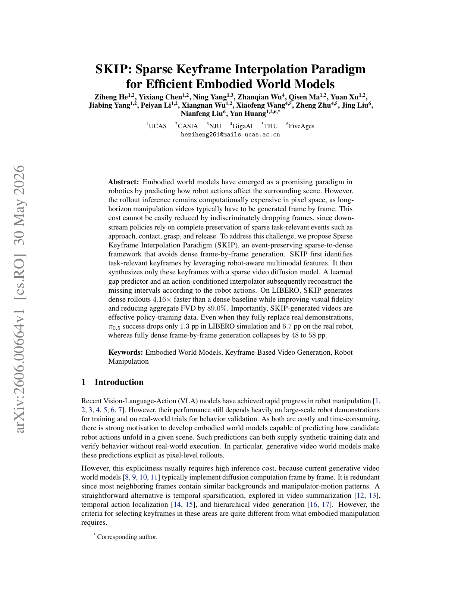

PhD student in artificial intelligence. I work on embodied world models, video generation for robotics, and training manipulation policies from generated data.
I'm Ziheng, a PhD student in artificial intelligence. I work on embodied world models — predicting how a robot's actions change the scene around it — and on making video generation efficient enough to train real manipulation policies.
I like working across the whole stack — the generative models themselves and the tooling to train and evaluate them — and I care about results that hold up on real robots, not just on benchmarks.
Centered on embodied world models — from the world model itself, to video generation for robotics, to robot policy learning.
Modeling how a robot's actions reshape the surrounding scene, and making rollout inference for long-horizon manipulation efficient.
Sparse keyframe synthesis, video diffusion, and action-conditioned interpolation — cutting generation cost while preserving task-critical events.
Training manipulation policies (e.g. VLA, π0.5) on generated video data, validated on benchmarks like LIBERO and on real robots.
The tools and languages I work with day to day.
Commits and milestones over the past year.
A path through textbooks, labs, and open-source communities.
Ph.D. in artificial intelligence at the School of Advanced Interdisciplinary Sciences (SAIS), University of Chinese Academy of Sciences.
Research in artificial intelligence at the Institute of Automation (NLPR), Chinese Academy of Sciences.
B.Eng. in Software Engineering at Southeast University.
My first first-author paper. Future work will appear on Google Scholar.

Ziheng He, Yixiang Chen, Ning Yang, et al. · arXiv preprint · cs.RO / cs.CV
Sparse Keyframe Interpolation (SKIP) is an event-preserving, sparse-to-dense framework for embodied world models: it synthesizes only task-relevant keyframes with a sparse video diffusion model, then interpolates the missing intervals conditioned on robot actions — avoiding dense frame-by-frame rollout. On LIBERO it runs 4.16× faster than a dense baseline while cutting FVD by 89.0%, and its generated videos work directly as policy-training data.
Inspired by Super.so — notes open in an in-site reader styled to match this page, not a raw Notion page. Content is written in Notion and synced here.